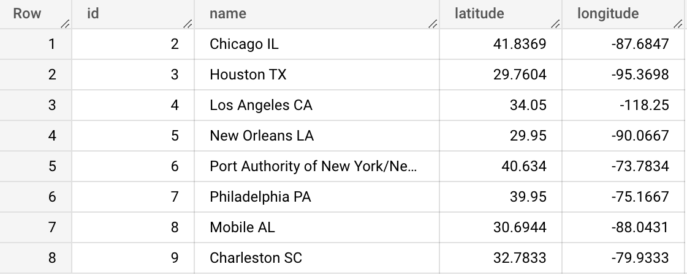
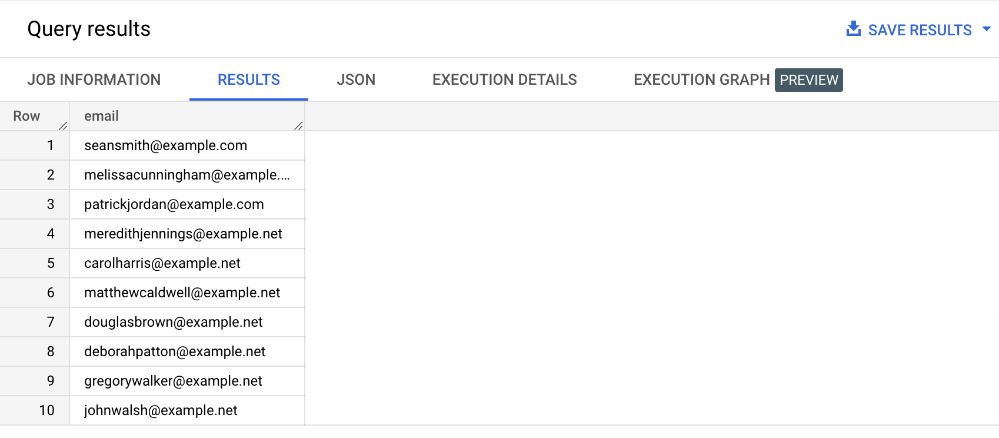
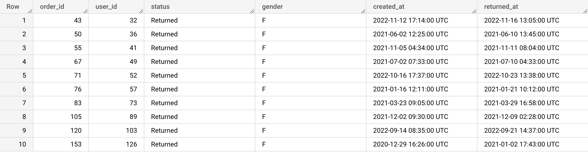
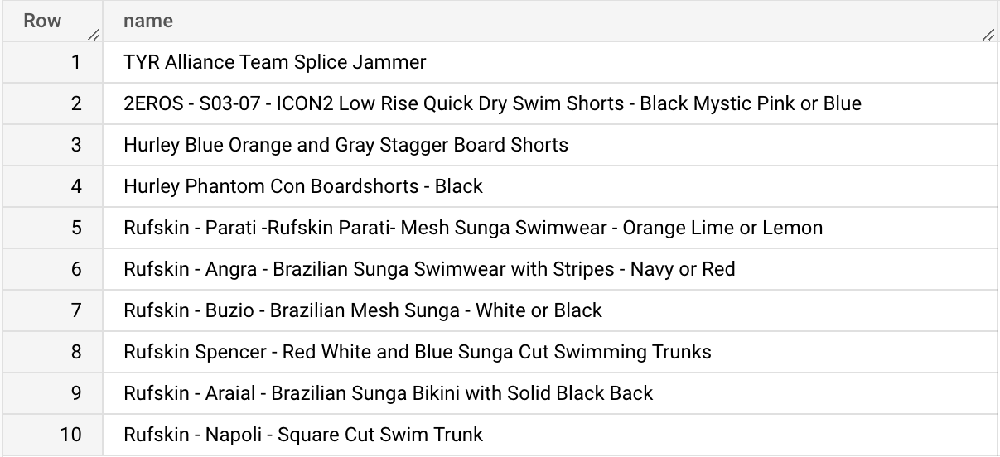

The NOT operator is used to specify a “negative condition”, usually accompanying other operators like IN, BETWEEN, LIKE etc.
Type the query below in the BigQuery console and run it. Don't copy paste. 😉
SELECT *
FROM bigquery-public-data.thelook_ecommerce.distribution_centers
WHERE name NOT IN ('Memphis TN', 'Savannah GA');
Example results:

Type the query below in the BigQuery console and run it. Don't copy paste. 😉
SELECT email
FROM bigquery-public-data.thelook_ecommerce.users
WHERE email NOT LIKE '%@example.org'
LIMIT 10;
Example results:

Since we can’t use normal comparison operators for NULL, when we want to test that something has a value, we use the IS NOT NULL construct.
Type the query below in the BigQuery console and run it. Don't copy paste. 😉
SELECT *
FROM bigquery-public-data.thelook_ecommerce.orders
WHERE returned_at IS NOT NULL
LIMIT 10;
Example results:

{% include practice_problems_intructions.html %}bigquery-public-data.thelook_ecommerce.products
Write a query that will show 10 products that don’t have the string Men’s in their name.

SELECT name
FROM bigquery-public-data.thelook_ecommerce.products
WHERE name NOT LIKE '%Men\'s%'
LIMIT 10;